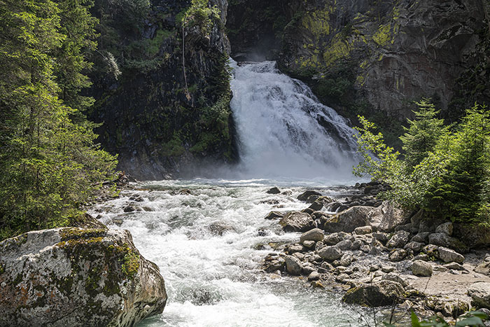
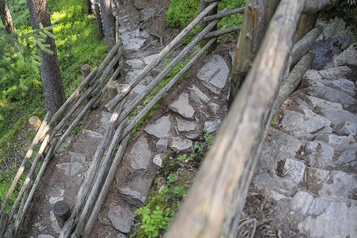
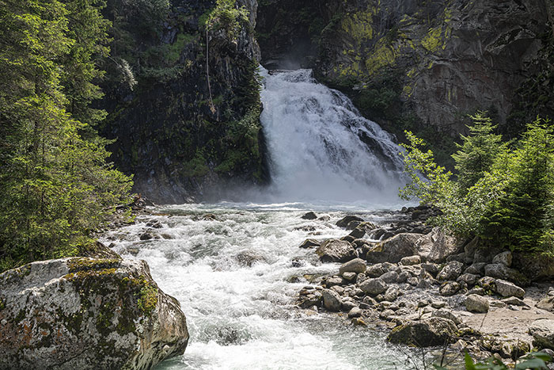
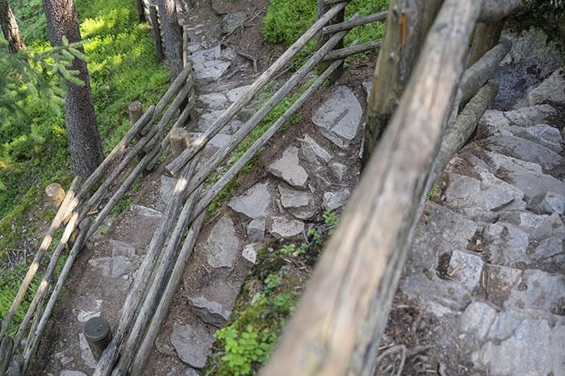
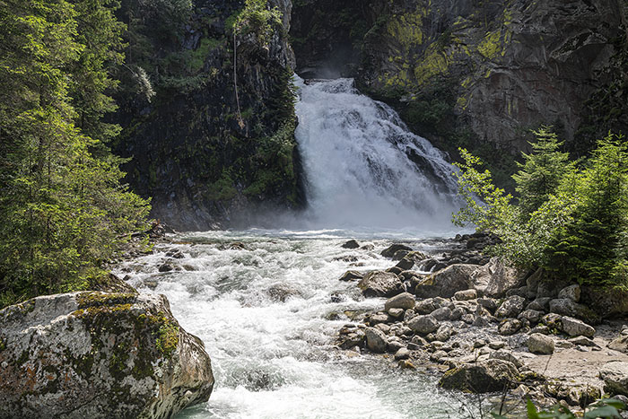
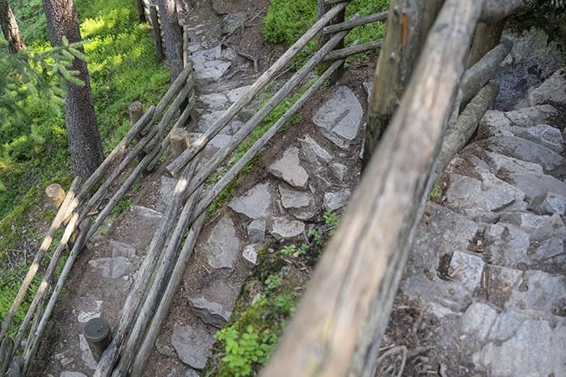

Bolo ďalšie pekné slnečné ráno. Spali sme iba pár metrov od potoka, jeho šum pôsobil veľmi upokojujúco a nám sa preto ani nechcelo vstávať z postele. Keď sme sa na to konečne odhodlali, naraňajkovali sme sa, osviežili v prameni a mohli sme vyraziť k vodopádom.
Celý park je veľmi pekne udržiavaný. Keďže sme vyrazili na talianske pomery veľmi skoro, mali sme tieto krásne cestičky iba pre seba. Urobili sme veľmi dobre, pretože cestou naspäť tu už bola poriadna tlačenica.
Našou prvou zastávkou bola Chiesetta di San Francesco e Klara. Veľmi pekná kaplnka zasvätená Františkovi a Kláre z Assisi.
Vo vnútri kaplnky.
Že vodopád už nieje ďaleko, sme vedeli vďaka stále silnejšiemu šumu valiacej sa vody.
Cascate di Riva tvoria 3 vodopády. Teraz sme stáli pri tom najväčšom. Nepatril medzi najvyššie, ktoré sme videli, no kompenzoval to svojou mohutnosťou.
Voda sa pri nárazoch na skaly rozbíjala na drobné kvapôčky,na ktorých sa lámali slnečné lúče a zafarbovali okolie všetkými farbami dúhy.
Ak sa človek chce postaviť priamo pred vodopád, musí počítať s tým, že bez nepremokavej bundy bude do pár sekúnd premočený do nitky. Rovnako ho čaká nával silného vetra, ktorý ho poriadne prefúkne.
K spodnému vodopádu sme sa dostali naozaj expresne. Umožnila nám to kladková dráha Fly-line.
Pod spodným vodopádom nás už čakali húfy ľudí a chvíľu trvalo, kým som našiel miesto, z ktorého by som ho mohol nerušene odfotiť. Nakoniec sa to podarilo a tak sme sa mohli pobrať naspäť hore k autu. Tam sme si ešte uvarili obed a potom, hoci sa nám veľmi nechcelo, bol už čas ísť domov. Dva dni zbehli ako voda, no priniesli nám veľa zážitkov. Dolomity sú naozaj výnimočným miestom a už teraz sa tešíme, ako ich znova navštívime.

